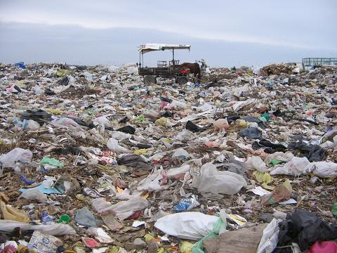

| Fecha de Publicación: 02/08/12 |
Las instalaciones bressanistas huelen a bosta

No nos gusta exagerar, pero fue algo así
"Las cercanías al basural, las cloacas y la bosta de caballo para fertilizar a las plantas han hecho a las instalaciones un lugar poco higiénico según la AFIP. Hasta el momento hay unos 5 muertos, 7 heridos y 22 desaparecidos. Las enfermedades provocadas por dicho hecho fueron: cáncer de testículo, de lengua y de ombligo."
[Leer más] |
Fecha de publicación: 01/08/12 |
Bressán lee el Martín Fierro
.jpg)
No se imaginan las cosas que encontrarán por ahí
"Ese increíble libro donde se nos enseña a ser unos discapacitados para escribir y que después nos corrijan en el Facebook, y que también nos dice que los indios son unos negros maleducados (como si fuesen los únicos). Nos deja tan buenas enseñanzas que Bressán nos hace un buen análisis, para que sigamos su lectura."
[Leer más] |
Fecha de publicación: 01/08/12 |
A Bressán le gusta el reggaeton

Bressán dando un bailecito a favor de los negros
"La nueva cultura Bressanista va más allá de lo que uno querría. No es por ser una persona negra, que es específicamente a lo que van las canciones de este género, si no que lo escucha para conocer las consecuencias y preparar una buena defensiva a todo aquel que esté en contra del gobierno. Por lo tanto, llenar de mierda la cabeza, literalmente, es lo que mejor que se puede hacer."
[Leer más] |